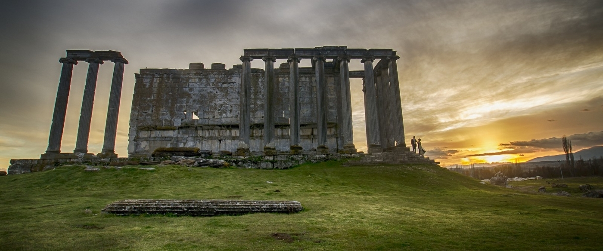
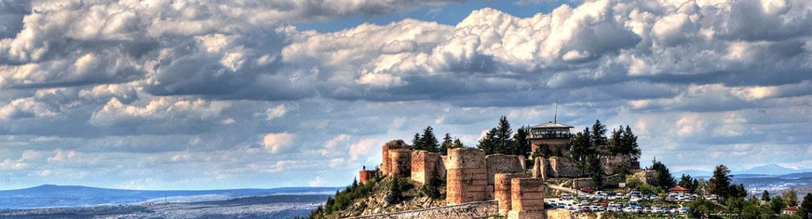
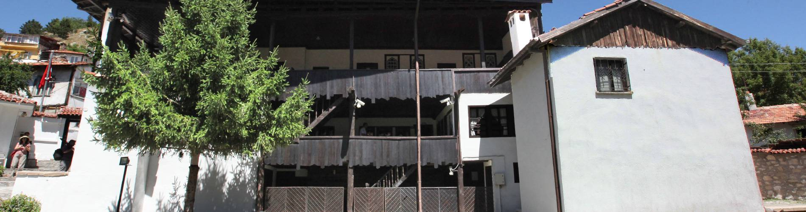
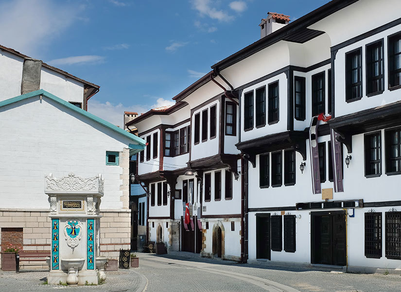

Editör Hakkında

Frontendle yakın zamanda ilgilenmeye başlamış hazırlık sınıfı endüstri mühendisi öğrencisiyim. İlk çalışmamı Kütahya'ya ayırmamın sebebi hem hayatımın yaklaşık 18 19 yılını geçirdiğim şehir olması hem de web sitesine konu ararken karşımda Kütahyaya geldiğinizde görmeden ayrılamayacağınız her yerde olan 'Evliya Çelebi'nin Kütahyalı olduğunu biliyor musunuz?' çinisinin olmasıydı. Umarım hem zevk alarak okur hem de tarih boyunca Kütahya'nın herzaman silik veya küçük bir şehir olmadığını -bilmiyorsan eğer- öğrenirsin. Daha kompleks projeler de görüşmek dileğiyle.
Kütahya'nın Yöresel Lezzetleri
Aşşağıdaki inklerden tariflere ulaşabilirsin.
Aizanoi Antik Kenti
Aizanoi Kütahya il merkezine yaklaşık 55 km uzaklıkta bulunan Çavdarhisar ilçesinde yer almaktadır.
Dünya’nın en büyük Zeus Tapınağı’na ev sahipliği yapan Aizanoi ayrıca Dünya’nın ilk borsa binası ile de dikkatleri üzerine çekti. Sadece bu da değil; Dünya’da başka örneği bulunmayan tiyatro-stadyum yapısı ile de büyük bir farklılığa sahip. Özel ve çok güzel, bir o kadar da ihtişamlı Aizanoi. Mutlaka ama mutlaka görülmesi gereken kentte göreceğiniz yapılar sizleri çok etkileyecek.
Kütahya Kalesi
Kütahyalılar’ın kendi aralarında Hisar dedikleri kale bugün ülkemizin en büyük kalelerinden biridir.
Kale M.S. 8.yy da Bizans tarafından yapıldı. Kalenin 72 adet burcu vardır. Bugün bu burçlardan çoğu ayakta olmasa bile Kütahya Kalesi o dönemin en heybetli kalelerinden biriydi. Kale Bizans’tan sonra Selçuklular, Germiyanoğulları ve Osmanlı tarafından da kullanılıp iskan görmüştür. İç Kale, Yukarı Kale ve Aşağı Kale bölümlerinden oluşmaktadır. Mescid, ambar, sarnıç gibi yapıların bulunduğu kalede Germiyan Beyliği’nden kalan izleri de görmek mümkün. Özellikle de Kale-i Bala ve Aşağı Hisar Camileri Germiyanoğulları’nın imzasını taşımaktada olup şehrin kıymetli yapılarıdır.
Evliya Çelebi Seyahatnamesi’nde Kütahya’dan bahsederken Osmanlı döneminde Fatih Sultan Mehmed’in kaleye ekleme yaptırdığından, Aşağı Kale denilen kısmın onun döneminde yapıldığından söz eder. Hatta aşağı kalenin su ihtiyacını karşılamak için yapıldığını vurgular.
Kossuth Evi Müzesi
1982 tarihinden bu güne açık olan Lajos Kossuth Müzesi halk tarafından çoğunlukla Macar Evi olarak bilinir.
18. yüzyıla tarihlenen ve Şeyh Bedrettin Efendi’ye ait olan klasik ev. Fakat burayı farklı kılan şey Macarlar’ın Özgürlük Savaşı liderlerinden biri olan ve ilk Macar Cumhurbaşkanı kabul edilen Lajos Kossuth’un burada yaşamış olmasıdır. 1850-1851 yıllarında yaklaşık bir buçuk sene Kütahya’daki bu evde ailesiyle beraber kalmıştır.
Buraları gezerken hem klasik Türk evinin özelliklerini ve eşyalarını görmüş olacaksınız hem de odalarda sergilenen Macar kültürüne ait eşyaları. Macar geleneksel kıyafetleri, Kossuth’un özel çalışmaları görmeye değer.
Germiyan Sokağı
19. yüzyıl konaklarının olduğu sokak, Kütahya’yı kendilerine başkent edinmiş Germiyanlar’ın adını taşıyor.
Kendine has mimari dokularını koruyan konaklar farklı işlevlerle gelenleri ağırlıyor. Bazıları lezzetli yemekleri ile restoran hizmeti verirken bazıları da müze olarak ziyaretçilere gönlünü açıyor. Burada yürüyüş yapıp bir hatıra fotoğrafı çektirin. Ardından Germiyan Sokak’ın zenginliklerini keşfe dalın derim.
Kütahya Çinili Cami
Çok değerli sanatçımız Ahmet Yakupoğlu tarafından 1973 yılında yaptırıldı.
.png)
Ressam ve neyzen olan Kütahyalı ressam Ahmet Yakupoğlu'nun ilimize hediyesidir. Türk izleri taşıyan bu güzel eseri şehrine hediye etmiştir. Orta Asya mimari tarzındaki minaresi farklı kılar camiyi. Caminin sekizgen şekli ise Selçuklu özelliği taşır. Avlusundaki şadırvan dahi Sekiz köşeli Selçuklu motifi şeklindedir. Dışı tamamen mavi renkteki Kütahya çinileri ile kaplıdır. Tek kubbeli olan bu şirin cami şu anda malesef kapalı.